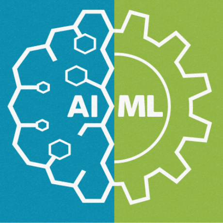

Hi, My name is Harsh
and I am a passionate
Work Experience

Python Developer (2019-present)
A Python Web Developer is responsible for writing server-side web application logic. Python web developers usually develop back-end components, connect the application with the other (often third-party) web services, and support the front-end developers by integrating their work with the Python application.

Front-end Developer (2020-present)
A Front-End Developer is responsible for developing new user-facing features, determining the structure and design of web pages, building reusable codes, optimizing page loading times, and using a variety of markup languages to create the web pages.

AI-ML Developer (2022-present)
A machine learning (ML) developer is an expert on using data to training models. The models are then used to automate processes like image classification, speech recognition, and market forecasting. Definitions of machine learning roles can vary.

AWS (2023-present)
Amazon Web Services offers a broad set of global cloud-based products including compute, storage, databases, analytics, networking, mobile, developer tools, management tools, IoT, security, and enterprise applications: on-demand, available in seconds, with pay-as-you-go pricing.